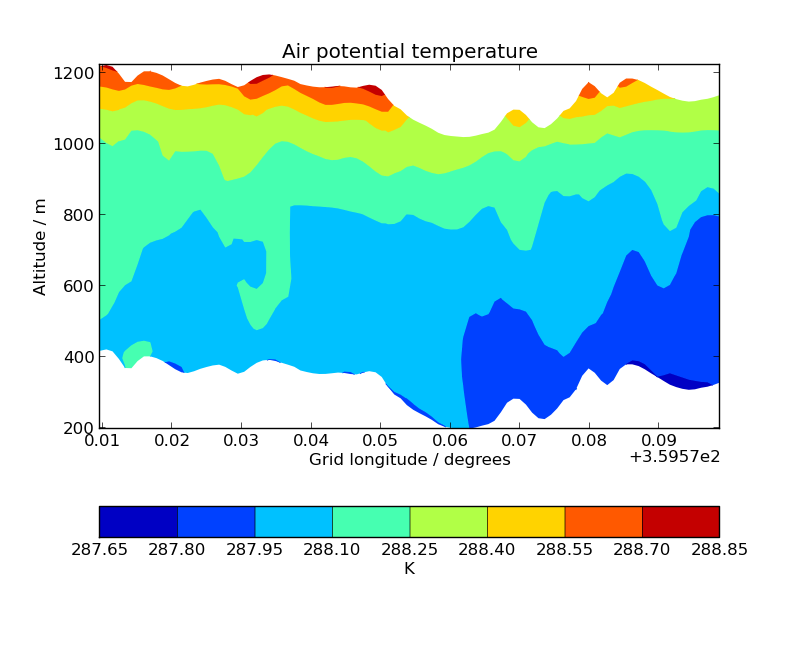
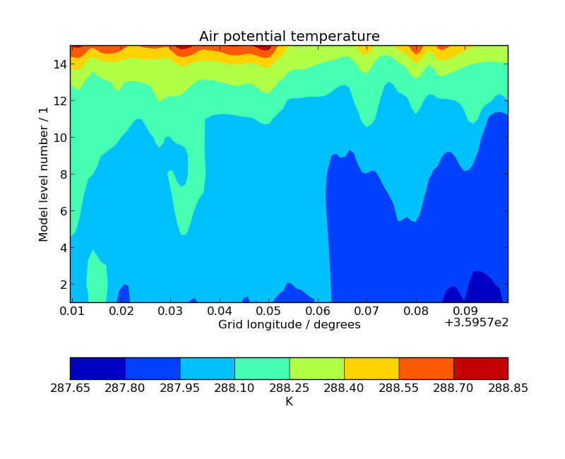

Iris 0.9
This example demonstrates contour plots of a cross-sectioned multi-dimensional cube which features a hybrid height vertical coordinate system.


"""
Cross section plots
===================
This example demonstrates contour plots of a cross-sectioned multi-dimensional cube which features
a hybrid height vertical coordinate system.
"""
import matplotlib.pyplot as plt
import iris
import iris.quickplot as qplt
def main():
fname = iris.sample_data_path('hybrid_height.nc')
theta = iris.load_strict(fname)
# Extract a single height vs longitude cross-section. N.B. This could easily be changed to
# extract a specific slice, or even to loop over *all* cross section slices.
cross_section = theta.slices(['grid_longitude', 'model_level_number']).next()
qplt.contourf(cross_section, coords=['grid_longitude', 'altitude'])
plt.show()
# Now do the equivalent plot, only against model level
plt.figure()
qplt.contourf(cross_section, coords=['grid_longitude', 'model_level_number'])
plt.show()
if __name__ == '__main__':
main()